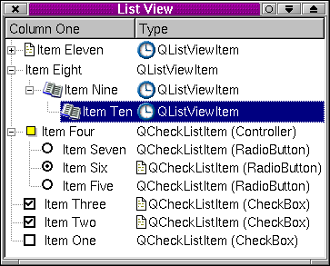

QCheckListItem Class Reference
The QCheckListItem class provides checkable list view items.
More...
#include <qlistview.h>
Inherits QListViewItem.
List of all member functions.
Public Members
enum
Type { RadioButton, CheckBox, Controller }
QCheckListItem ( QCheckListItem * parent, const QString & text, Type tt = Controller )
QCheckListItem ( QListViewItem * parent, const QString & text, Type tt = Controller )
QCheckListItem ( QListView * parent, const QString & text, Type tt = Controller )
QCheckListItem ( QListViewItem * parent, const QString & text, const QPixmap & p )
QCheckListItem ( QListView * parent, const QString & text, const QPixmap & p )
virtual void
paintCell ( QPainter * p, const QColorGroup & cg, int column, int width, int align )
virtual void
paintFocus ( QPainter * p, const QColorGroup & cg, const QRect & r )
virtual void
setOn ( bool b )
virtual int
rtti () const
Protected Members
Detailed Description
The QCheckListItem class provides checkable list view items.
QCheckListItems are used in QListViews to provide
QListViewItems that are checkboxes, radio buttons or
controllers.
Checkbox and controller check list items may be inserted at any
level in a list view. Radio button check list items must be children
of a controller check list item.
The item can be checked or unchecked with setOn(). Its type can be
retrieved with type() and its text retrieved with text().

See also QListViewItem, QListView and Advanced Widgets.
Member Type Documentation
QCheckListItem::Type
This enum type specifies a QCheckListItem's type:
- QCheckListItem::RadioButton
- QCheckListItem::CheckBox
- QCheckListItem::Controller
Member Function Documentation
QCheckListItem::QCheckListItem ( QCheckListItem * parent, const QString & text, Type tt = Controller )
Constructs a checkable item with parent parent, text text and type
tt. Note that a RadioButton must be the child of a Controller,
otherwise it will not toggle.
QCheckListItem::QCheckListItem ( QListViewItem * parent, const QString & text, Type tt = Controller )
Constructs a checkable item with parent parent, text text and type
tt. Note that this item must not be a RadioButton. Radio
buttons must be children of a Controller.
QCheckListItem::QCheckListItem ( QListView * parent, const QString & text, Type tt = Controller )
Constructs a checkable item with parent parent, text text and type
tt. Note that tt must not be RadioButton. Radio
buttons must be children of a Controller.
QCheckListItem::QCheckListItem ( QListViewItem * parent, const QString & text, const QPixmap & p )
Constructs a Controller item with parent parent, text text and pixmap
p.
QCheckListItem::QCheckListItem ( QListView * parent, const QString & text, const QPixmap & p )
Constructs a Controller item with parent parent, text text and pixmap
p.
QCheckListItem::~QCheckListItem ()
Destroys the item, deleting all its children, freeing up all
allocated resources.
void QCheckListItem::activate () [virtual protected]
Toggle check box or set radio button to on.
Reimplemented from QListViewItem.
bool QCheckListItem::isOn () const
Returns TRUE if the item is toggled on; otherwise returns FALSE.
void QCheckListItem::paintCell ( QPainter * p, const QColorGroup & cg, int column, int width, int align ) [virtual]
Paints the item using the painter p and the color group cg.
The item is in column column, has width width and is aligned
align. (See Qt::AlignmentFlags for valid alignments.)
Reimplemented from QListViewItem.
void QCheckListItem::paintFocus ( QPainter * p, const QColorGroup & cg, const QRect & r ) [virtual]
Draws the focus rectangle r using the color group cg on
the painter p.
Reimplemented from QListViewItem.
int QCheckListItem::rtti () const [virtual]
Returns 1.
Make your derived classes return their own values for rtti(), and
you can distinguish between listview items. You should use values
greater than 1000 preferably a large random number, to allow for
extensions to this class.
Reimplemented from QListViewItem.
void QCheckListItem::setOn ( bool b ) [virtual]
Sets the button on if b is TRUE, otherwise sets it off. Maintains
radio button exclusivity.
void QCheckListItem::stateChange ( bool ) [virtual protected]
This virtual function is called when the item changes its on/off state.
QString QCheckListItem::text () const
Returns the text of the item.
void QCheckListItem::turnOffChild () [protected]
If this is a Controller that has RadioButton children, turn off the
child that is on.
Type QCheckListItem::type () const
Returns the type of this item.
This file is part of the Qt toolkit.
Copyright © 1995-2002
Trolltech. All Rights Reserved.